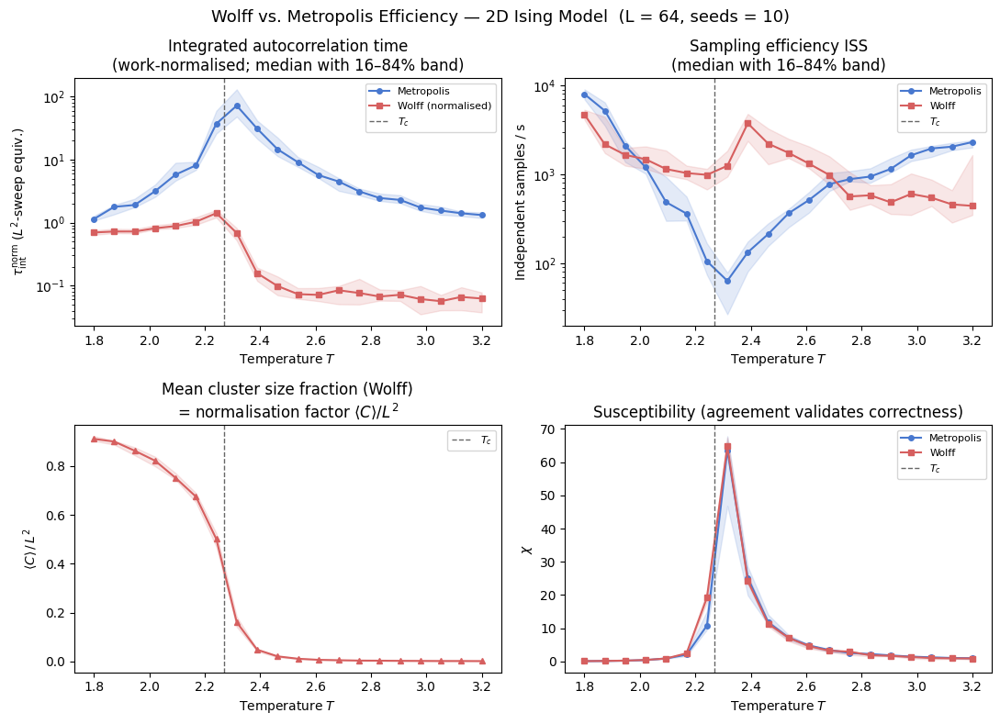
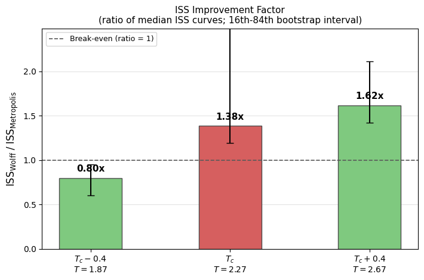

Wolff vs. Metropolis: Algorithmic Efficiency in the Critical Regime
Near a second-order phase transition, standard Metropolis-Hastings [1] suffers from critical slowing down: the integrated autocorrelation time \(\tau_{\mathrm{int}}\) grows as \(\tau_{\mathrm{int}} \sim L^z\), with a dynamic critical exponent \(z \approx 2.17\) for the 2D Ising model. Physically, successive spin configurations generated by single-site flips remain highly correlated for many steps because proposed flips within a large correlated domain are overwhelmingly rejected and the system cannot efficiently cross free-energy barriers by small local moves.
The Wolff cluster algorithm [2] eliminates this bottleneck directly. Rather than proposing a single-spin flip, Wolff grows a cluster from a random seed by probabilistically bonding same-sign nearest neighbours with probability \(P_{\mathrm{add}} = 1 - e^{-2\beta J}\), then flips the entire cluster in one accepted collective move. The bond probability is derived from the Fortuin-Kasteleyn random-cluster representation [3] and guarantees detailed balance without any rejections. The dynamic critical exponent drops to \(z \approx 0.25\), nearly an order of magnitude smaller than Metropolis.
The practical benefit is regime-dependent. Far below \(T_c\) the equilibrium state is a single near-spanning ferromagnetic domain; all grown clusters are system-spanning and flipping them merely reverses the global magnetization without decorrelating the configuration. Far above \(T_c\) the correlation length is short and clusters are vanishingly small, so the BFS overhead dominates. The Wolff advantage is concentrated in the window \(|T - T_c| \lesssim 0.2\,T_c\) where \(\xi\) is large but finite. For a comprehensive review of these methods, see Newman and Barkema [4].
The normalisation problem
A naive comparison of \(\tau_{\mathrm{int}}\) step counts between the two algorithms is misleading because the algorithms do different amounts of physical work per recorded step:
Algorithm |
Work per step |
|---|---|
Metropolis (checkerboard) |
\(L^2\) single-spin flip attempts - one full lattice sweep |
Wolff cluster |
1 cluster flip of \(\langle C \rangle\) spins - 100% acceptance rate |
Counting raw steps treats a Wolff step at \(T \gg T_c\) (where \(\langle C \rangle \approx 1\) spin) as equivalent to a Metropolis step that touches all \(L^2\) spins. This makes Wolff appear arbitrarily fast in the disordered phase for the wrong reason, and artificially slow below \(T_c\) where clusters are nearly system-spanning. Neither conclusion reflects the actual computational cost.
The standard fix is to express autocorrelation time in units of one \(L^2\) flip-attempt sweep:
where \(\langle C \rangle\) is the mean cluster size measured from recorded per-step cluster sizes. After normalisation, both algorithms are on the same ruler: how many equivalent full-lattice sweep attempts are needed to decorrelate.
This notebook therefore reports two complementary views. The work-normalised \(\tau_{\mathrm{int}}\) makes the decorrelation cost of the two algorithms comparable on one ruler, and the independent-sample rate in inverse seconds sidesteps the unit question altogether, since it is invariant under any rescaling of the update unit and so needs no extra conversion.
[8]:
from __future__ import annotations
import os
import time
import matplotlib.pyplot as plt
import numpy as np
TC_ISING: float = 2.0 / np.log(1.0 + np.sqrt(2.0))
PALETTE = {'metro': '#4878CF', 'wolff': '#D65F5F'}
print(f'Exact Onsager T_c = {TC_ISING:.6f}')
Exact Onsager T_c = 2.269185
Load or compute data
This notebook compares the independent-sample rate and autocorrelation structure of checkerboard Metropolis and Wolff dynamics across temperature. It first searches for precomputed measurements at ../results/ising/wolff_efficiency.npz.
When the cache file is present, the notebook loads robust summaries (median and 16–84% bands across seeds) and, when available, per-seed sample arrays for uncertainty-aware analysis. The same plotting code also supports legacy caches that only contain single-value arrays.
When the cache file is absent, the notebook runs a small inline fallback (L=16, 8 temperature points, several seed replicas) so the workflow remains self-contained. This fallback is useful for validating analysis logic and plotting, but it is intentionally small and should be treated as demo quality.
For publication-quality data, run:
python scripts/ising/wolff_efficiency.py --size 64 --t-points 20 --n-seeds 10 --meas-steps 2000
This stores both aggregate statistics and per-seed arrays in ../results/ising/wolff_efficiency.npz for reuse on subsequent notebook runs.
[13]:
NPZ_PATH = '../results/ising/wolff_efficiency.npz'
def _bands_from_samples(samples: np.ndarray) -> tuple[np.ndarray, np.ndarray, np.ndarray]:
med = np.nanmedian(samples, axis=1)
p16 = np.nanpercentile(samples, 16, axis=1)
p84 = np.nanpercentile(samples, 84, axis=1)
return med, p16, p84
_cache_ok = False
if os.path.exists(NPZ_PATH):
data = np.load(NPZ_PATH)
_required = {
'temperatures', 'tau_metro', 'tau_wolff',
'iss_metro', 'iss_wolff', 'mean_cluster_frac',
'chi_metro', 'chi_wolff', 'L',
}
if _required.issubset(set(data.files)):
temperatures = data['temperatures']
tau_metro = data['tau_metro']
tau_wolff = data['tau_wolff']
iss_metro = data['iss_metro']
iss_wolff = data['iss_wolff']
mean_cluster_frac = data['mean_cluster_frac']
chi_metro = data['chi_metro']
chi_wolff = data['chi_wolff']
L = int(data['L'])
have_samples = {
'tau_metro_samples', 'tau_wolff_samples',
'iss_metro_samples', 'iss_wolff_samples',
'mean_cluster_frac_samples',
'chi_metro_samples', 'chi_wolff_samples',
}.issubset(set(data.files))
if have_samples:
tau_metro_samples = data['tau_metro_samples']
tau_wolff_samples = data['tau_wolff_samples']
iss_metro_samples = data['iss_metro_samples']
iss_wolff_samples = data['iss_wolff_samples']
mean_cluster_frac_samples = data['mean_cluster_frac_samples']
chi_metro_samples = data['chi_metro_samples']
chi_wolff_samples = data['chi_wolff_samples']
n_seeds = int(data['n_seeds']) if 'n_seeds' in data.files else int(tau_metro_samples.shape[1])
tau_metro, tau_metro_p16, tau_metro_p84 = _bands_from_samples(tau_metro_samples)
tau_wolff, tau_wolff_p16, tau_wolff_p84 = _bands_from_samples(tau_wolff_samples)
iss_metro, iss_metro_p16, iss_metro_p84 = _bands_from_samples(iss_metro_samples)
iss_wolff, iss_wolff_p16, iss_wolff_p84 = _bands_from_samples(iss_wolff_samples)
mean_cluster_frac, mean_cluster_frac_p16, mean_cluster_frac_p84 = _bands_from_samples(mean_cluster_frac_samples)
chi_metro, chi_metro_p16, chi_metro_p84 = _bands_from_samples(chi_metro_samples)
chi_wolff, chi_wolff_p16, chi_wolff_p84 = _bands_from_samples(chi_wolff_samples)
print(
f'Loaded pre-computed data: L={L}, {len(temperatures)} temperature points, '
f'{n_seeds} seed replicas.'
)
else:
# Legacy cache compatibility: synthesize singleton sample dimension.
tau_metro_samples = tau_metro[:, None]
tau_wolff_samples = tau_wolff[:, None]
iss_metro_samples = iss_metro[:, None]
iss_wolff_samples = iss_wolff[:, None]
mean_cluster_frac_samples = mean_cluster_frac[:, None]
chi_metro_samples = chi_metro[:, None]
chi_wolff_samples = chi_wolff[:, None]
n_seeds = 1
tau_metro_p16 = tau_metro_p84 = tau_metro
tau_wolff_p16 = tau_wolff_p84 = tau_wolff
iss_metro_p16 = iss_metro_p84 = iss_metro
iss_wolff_p16 = iss_wolff_p84 = iss_wolff
mean_cluster_frac_p16 = mean_cluster_frac_p84 = mean_cluster_frac
chi_metro_p16 = chi_metro_p84 = chi_metro
chi_wolff_p16 = chi_wolff_p84 = chi_wolff
print(
f'Loaded legacy cache: L={L}, {len(temperatures)} temperature points, '
'no seed uncertainty arrays.'
)
_cache_ok = True
else:
print(f'Cache at {NPZ_PATH} is missing expected keys; running inline fallback.')
if not _cache_ok:
print('Pre-computed data not found. Running inline demo (L=16, 8 T-points, 5 seeds, ~2–4 min)...')
from models.ising_model import IsingSimulation
from utils.equilibration import convergence_equilibrate
from utils.exceptions import ZeroVarianceAutocorrelationError
from utils.observables import calculate_thermodynamics
from utils.statistics import calculate_autocorr
L = 16
temperatures = np.linspace(1.8, 3.2, 8)
EQ_CHUNK, EQ_MAX, MEAS = 100, 10000, 500
n_seeds = 5
n_temp = len(temperatures)
tau_metro_samples = np.full((n_temp, n_seeds), np.nan)
tau_wolff_samples = np.full((n_temp, n_seeds), np.nan)
iss_metro_samples = np.full((n_temp, n_seeds), np.nan)
iss_wolff_samples = np.full((n_temp, n_seeds), np.nan)
mean_cluster_frac_samples = np.full((n_temp, n_seeds), np.nan)
chi_metro_samples = np.full((n_temp, n_seeds), np.nan)
chi_wolff_samples = np.full((n_temp, n_seeds), np.nan)
for i, T in enumerate(temperatures):
for s in range(n_seeds):
base_seed = i * 1000 + s * 50
# -- Metropolis (checkerboard) --
sim_m_r = IsingSimulation(size=L, temp=T, update='checkerboard', init_state='random', seed=base_seed)
sim_m_o = IsingSimulation(size=L, temp=T, update='checkerboard', init_state='ordered', seed=base_seed)
convergence_equilibrate(sim_random=sim_m_r, sim_ordered=sim_m_o, chunk_size=EQ_CHUNK, max_steps=EQ_MAX)
t0 = time.perf_counter()
mags_m, engs_m = sim_m_r.run(n_steps=MEAS)
t_m = time.perf_counter() - t0
mags_m_a = np.array(mags_m)
try:
_, tau_m = calculate_autocorr(time_series=mags_m_a)
except (ZeroVarianceAutocorrelationError, ValueError):
tau_m = float('nan')
_, _, chi_m, _ = calculate_thermodynamics(
mags=mags_m_a, engs=np.array(engs_m), T=T, L=L,
)
iss_m = (MEAS / t_m) / tau_m if np.isfinite(tau_m) and tau_m > 0 else float('nan')
# -- Wolff --
sim_w_r = IsingSimulation(size=L, temp=T, update='wolff', init_state='random', seed=base_seed + 1)
sim_w_o = IsingSimulation(size=L, temp=T, update='wolff', init_state='ordered', seed=base_seed + 1)
convergence_equilibrate(sim_random=sim_w_r, sim_ordered=sim_w_o, chunk_size=EQ_CHUNK, max_steps=EQ_MAX)
t0 = time.perf_counter()
mags_w, engs_w = sim_w_r.run(n_steps=MEAS)
t_w = time.perf_counter() - t0
mags_w_a = np.array(mags_w)
try:
_, tau_w = calculate_autocorr(time_series=mags_w_a)
except (ZeroVarianceAutocorrelationError, ValueError):
tau_w = float('nan')
_, _, chi_w, _ = calculate_thermodynamics(
mags=mags_w_a, engs=np.array(engs_w), T=T, L=L,
)
iss_w = (MEAS / t_w) / tau_w if np.isfinite(tau_w) and tau_w > 0 else float('nan')
# -- Cluster sizes --
_, _, cluster_sizes_arr = sim_w_r.run_with_cluster_sizes(n_steps=min(MEAS, 300))
cfrac = float(np.mean(cluster_sizes_arr)) / (L * L)
tau_metro_samples[i, s] = tau_m
tau_wolff_samples[i, s] = tau_w
iss_metro_samples[i, s] = iss_m
iss_wolff_samples[i, s] = iss_w
mean_cluster_frac_samples[i, s] = cfrac
chi_metro_samples[i, s] = chi_m
chi_wolff_samples[i, s] = chi_w
print(f' T={T:.2f} complete ({n_seeds} seeds)', flush=True)
tau_metro, tau_metro_p16, tau_metro_p84 = _bands_from_samples(tau_metro_samples)
tau_wolff, tau_wolff_p16, tau_wolff_p84 = _bands_from_samples(tau_wolff_samples)
iss_metro, iss_metro_p16, iss_metro_p84 = _bands_from_samples(iss_metro_samples)
iss_wolff, iss_wolff_p16, iss_wolff_p84 = _bands_from_samples(iss_wolff_samples)
mean_cluster_frac, mean_cluster_frac_p16, mean_cluster_frac_p84 = _bands_from_samples(mean_cluster_frac_samples)
chi_metro, chi_metro_p16, chi_metro_p84 = _bands_from_samples(chi_metro_samples)
chi_wolff, chi_wolff_p16, chi_wolff_p84 = _bands_from_samples(chi_wolff_samples)
print('Inline fallback complete.')
Loaded pre-computed data: L=64, 20 temperature points, 10 seed replicas.
Work normalisation
Raw tau_wolff values count Wolff cluster updates, not full-lattice sweep equivalents. Before comparing dynamics, we convert both algorithms to the same work unit: one \(L^2\)-flip-attempt sweep.
Metropolis (checkerboard) already touches \(L^2\) spins per step, so:
Wolff touches \(\langle C \rangle\) spins per step, so:
The cluster fraction \(\langle C \rangle / L^2\) is measured directly from per-step cluster sizes (run_with_cluster_sizes), not inferred from a proxy.
Why ISS itself is unit-invariant
ISS has units of inverse time (independent samples per second):
Here \(r_u\) is the update rate (updates per second) and \(\tau_u\) is the autocorrelation time measured in the same update unit \(u\).
If we rescale the update unit by a factor \(a\), then \(r_{u'} = r_u / a\) and \(\tau_{u'} = a\,\tau_u\). Their product is unchanged, so ISS is invariant under this conversion.
So this notebook normalises \(\tau\) explicitly wherever the two algorithms are compared, and leaves ISS numerically untouched, reporting it with uncertainty bands across seed replicas.
[14]:
# Work-normalisation: convert tau to L²-sweep equivalents.
# mean_cluster_frac = <C> / L² (recorded per-step from run_with_cluster_sizes)
L2 = L * L
# Median normalised autocorrelation times
tau_metro_norm = tau_metro
tau_wolff_norm = tau_wolff * mean_cluster_frac
# Seed-level normalised tau for uncertainty propagation
tau_metro_norm_samples = tau_metro_samples
tau_wolff_norm_samples = tau_wolff_samples * mean_cluster_frac_samples
def _bands(samples: np.ndarray) -> tuple[np.ndarray, np.ndarray, np.ndarray]:
med = np.nanmedian(samples, axis=1)
p16 = np.nanpercentile(samples, 16, axis=1)
p84 = np.nanpercentile(samples, 84, axis=1)
return med, p16, p84
tau_metro_norm, tau_metro_norm_p16, tau_metro_norm_p84 = _bands(tau_metro_norm_samples)
tau_wolff_norm, tau_wolff_norm_p16, tau_wolff_norm_p84 = _bands(tau_wolff_norm_samples)
# ISS is unit-invariant under update-unit rescaling, so keep values unchanged.
iss_metro_norm = iss_metro
iss_wolff_norm = iss_wolff
iss_metro_norm_samples = iss_metro_samples
iss_wolff_norm_samples = iss_wolff_samples
iss_metro_norm, iss_metro_norm_p16, iss_metro_norm_p84 = _bands(iss_metro_norm_samples)
iss_wolff_norm, iss_wolff_norm_p16, iss_wolff_norm_p84 = _bands(iss_wolff_norm_samples)
print(f'L = {L}, N = L² = {L2}, seed replicas = {n_seeds}')
print('\nMean cluster size fraction <C>/L² per temperature (median [16th,84th]):')
for T, c, c16, c84 in zip(temperatures, mean_cluster_frac, mean_cluster_frac_p16, mean_cluster_frac_p84, strict=True):
print(f' T = {T:.3f}: {c:.4f} [{c16:.4f}, {c84:.4f}] (<C> ≈ {c * L2:.1f} spins)')
print('\nWork-normalised tau_int (L²-sweep equivalents), median [16th,84th]:')
hdr = f' {"T":>6} {"tau_metro_norm":>24} {"tau_wolff_norm":>24}'
print(hdr)
for T, tm, tm16, tm84, tw, tw16, tw84 in zip(
temperatures,
tau_metro_norm, tau_metro_norm_p16, tau_metro_norm_p84,
tau_wolff_norm, tau_wolff_norm_p16, tau_wolff_norm_p84, strict=True,
):
print(
f' {T:>6.3f} '
f'{tm:>8.3f} [{tm16:>7.3f}, {tm84:>7.3f}] '
f'{tw:>8.3f} [{tw16:>7.3f}, {tw84:>7.3f}]'
)
L = 64, N = L² = 4096, seed replicas = 10
Mean cluster size fraction <C>/L² per temperature (median [16th,84th]):
T = 1.800: 0.9103 [0.9026, 0.9215] (<C> ≈ 3728.7 spins)
T = 1.874: 0.8995 [0.8867, 0.9030] (<C> ≈ 3684.2 spins)
T = 1.947: 0.8620 [0.8435, 0.8759] (<C> ≈ 3530.7 spins)
T = 2.021: 0.8211 [0.7984, 0.8377] (<C> ≈ 3363.4 spins)
T = 2.095: 0.7514 [0.7441, 0.7708] (<C> ≈ 3077.6 spins)
T = 2.168: 0.6742 [0.6513, 0.6893] (<C> ≈ 2761.6 spins)
T = 2.242: 0.5008 [0.4696, 0.5246] (<C> ≈ 2051.3 spins)
T = 2.316: 0.1607 [0.1418, 0.1831] (<C> ≈ 658.1 spins)
T = 2.389: 0.0483 [0.0418, 0.0508] (<C> ≈ 197.6 spins)
T = 2.463: 0.0212 [0.0170, 0.0231] (<C> ≈ 86.6 spins)
T = 2.537: 0.0114 [0.0103, 0.0129] (<C> ≈ 46.7 spins)
T = 2.611: 0.0069 [0.0065, 0.0085] (<C> ≈ 28.4 spins)
T = 2.684: 0.0053 [0.0047, 0.0062] (<C> ≈ 21.6 spins)
T = 2.758: 0.0037 [0.0034, 0.0043] (<C> ≈ 15.3 spins)
T = 2.832: 0.0034 [0.0031, 0.0038] (<C> ≈ 13.8 spins)
T = 2.905: 0.0028 [0.0025, 0.0031] (<C> ≈ 11.5 spins)
T = 2.979: 0.0025 [0.0023, 0.0028] (<C> ≈ 10.2 spins)
T = 3.053: 0.0021 [0.0019, 0.0022] (<C> ≈ 8.6 spins)
T = 3.126: 0.0021 [0.0018, 0.0022] (<C> ≈ 8.5 spins)
T = 3.200: 0.0017 [0.0016, 0.0019] (<C> ≈ 7.2 spins)
Work-normalised tau_int (L²-sweep equivalents), median [16th,84th]:
T tau_metro_norm tau_wolff_norm
1.800 1.140 [ 1.074, 1.275] 0.697 [ 0.639, 0.752]
1.874 1.781 [ 1.353, 1.909] 0.723 [ 0.683, 0.798]
1.947 1.906 [ 1.756, 2.392] 0.723 [ 0.673, 0.788]
2.021 3.155 [ 2.561, 4.014] 0.814 [ 0.782, 0.908]
2.095 5.771 [ 4.626, 8.905] 0.882 [ 0.819, 0.978]
2.168 8.120 [ 6.866, 9.234] 1.032 [ 0.923, 1.211]
2.242 37.198 [ 25.955, 59.747] 1.413 [ 1.208, 1.583]
2.316 72.022 [ 48.216, 130.542] 0.683 [ 0.522, 0.819]
2.389 31.058 [ 21.481, 41.720] 0.157 [ 0.119, 0.193]
2.463 14.602 [ 11.395, 22.412] 0.098 [ 0.070, 0.140]
2.537 9.087 [ 7.670, 10.939] 0.073 [ 0.062, 0.091]
2.611 5.687 [ 5.108, 7.665] 0.071 [ 0.057, 0.091]
2.684 4.486 [ 3.195, 5.066] 0.084 [ 0.051, 0.099]
2.758 3.135 [ 2.716, 3.487] 0.076 [ 0.050, 0.128]
2.832 2.459 [ 2.211, 2.892] 0.067 [ 0.058, 0.087]
2.905 2.294 [ 2.035, 2.726] 0.071 [ 0.057, 0.084]
2.979 1.736 [ 1.541, 1.974] 0.061 [ 0.035, 0.098]
3.053 1.553 [ 1.333, 1.791] 0.057 [ 0.041, 0.071]
3.126 1.409 [ 1.269, 1.495] 0.066 [ 0.041, 0.094]
3.200 1.319 [ 1.183, 1.452] 0.062 [ 0.038, 0.078]
Four-panel overview
The four panels show the efficiency landscape across temperature using median values with 16–84% uncertainty bands from seed replicas.
Top-left, :math:`tau^{mathrm{norm}}_{mathrm{int}}(T)`: Autocorrelation times in \(L^2\)-sweep equivalents. This is the correct work-comparable view of decorrelation cost. Metropolis peaks sharply near \(T_c\) (critical slowing down), while Wolff remains much lower.
Top-right, :math:`mathrm{ISS}(T)` on a log scale: Independent samples per second with seed-uncertainty bands. ISS is unit-invariant under update-unit rescaling, so values are unchanged by the \(\tau\) normalisation step. The log axis exposes both crossover structure and order-of-magnitude separations.
Bottom-left, :math:`langle C rangle / L^2(T)`: Mean cluster-size fraction (with uncertainty). This is the Wolff work-normalisation factor and the physical mechanism behind reduced critical slowing down.
Bottom-right, :math:`chi(T)`: Susceptibility agreement between algorithms (with uncertainty). Agreement confirms both updates sample the same equilibrium distribution; systematic disagreement would indicate a correctness issue.
[15]:
fig, axes = plt.subplots(2, 2, figsize=(11, 8))
fig.suptitle(
f'Wolff vs. Metropolis Efficiency — 2D Ising Model (L = {L}, seeds = {n_seeds})', fontsize=13,
)
# tau_int_norm(T) — work-normalised, L²-sweep equivalents
ax = axes[0, 0]
ax.semilogy(temperatures, tau_metro_norm, '-o', color=PALETTE['metro'], ms=4, label='Metropolis')
ax.semilogy(temperatures, tau_wolff_norm, '-s', color=PALETTE['wolff'], ms=4, label='Wolff (normalised)')
ax.fill_between(temperatures, tau_metro_norm_p16, tau_metro_norm_p84, color=PALETTE['metro'], alpha=0.15)
ax.fill_between(temperatures, tau_wolff_norm_p16, tau_wolff_norm_p84, color=PALETTE['wolff'], alpha=0.15)
ax.axvline(TC_ISING, color='0.4', ls='--', lw=1, label=r'$T_c$')
ax.set_xlabel('Temperature $T$')
ax.set_ylabel(r'$\tau^{\mathrm{norm}}_{\mathrm{int}}$ ($L^2$-sweep equiv.)')
ax.set_title('Integrated autocorrelation time\n(work-normalised; median with 16–84% band)')
ax.legend(fontsize=8)
# ISS(T) — unit-invariant under update-unit conversion; log scale improves readability
ax = axes[0, 1]
ax.semilogy(temperatures, iss_metro_norm, '-o', color=PALETTE['metro'], ms=4, label='Metropolis')
ax.semilogy(temperatures, iss_wolff_norm, '-s', color=PALETTE['wolff'], ms=4, label='Wolff')
ax.fill_between(temperatures, iss_metro_norm_p16, iss_metro_norm_p84, color=PALETTE['metro'], alpha=0.15)
ax.fill_between(temperatures, iss_wolff_norm_p16, iss_wolff_norm_p84, color=PALETTE['wolff'], alpha=0.15)
ax.axvline(TC_ISING, color='0.4', ls='--', lw=1, label=r'$T_c$')
ax.set_xlabel('Temperature $T$')
ax.set_ylabel('Independent samples / s')
ax.set_title('Sampling efficiency ISS\n(median with 16–84% band)')
ax.legend(fontsize=8)
# mean cluster size fraction — normalisation factor
ax = axes[1, 0]
ax.plot(temperatures, mean_cluster_frac, '-^', color=PALETTE['wolff'], ms=4)
ax.fill_between(temperatures, mean_cluster_frac_p16, mean_cluster_frac_p84, color=PALETTE['wolff'], alpha=0.15)
ax.axvline(TC_ISING, color='0.4', ls='--', lw=1, label=r'$T_c$')
ax.set_xlabel('Temperature $T$')
ax.set_ylabel(r'$\langle C \rangle \,/\, L^2$')
ax.set_title(r'Mean cluster size fraction (Wolff)' + '\n' + r'= normalisation factor $\langle C\rangle/L^2$')
ax.legend(fontsize=8)
# chi consistency
ax = axes[1, 1]
ax.plot(temperatures, chi_metro, '-o', color=PALETTE['metro'], ms=4, label='Metropolis')
ax.plot(temperatures, chi_wolff, '-s', color=PALETTE['wolff'], ms=4, label='Wolff')
ax.fill_between(temperatures, chi_metro_p16, chi_metro_p84, color=PALETTE['metro'], alpha=0.15)
ax.fill_between(temperatures, chi_wolff_p16, chi_wolff_p84, color=PALETTE['wolff'], alpha=0.15)
ax.axvline(TC_ISING, color='0.4', ls='--', lw=1, label=r'$T_c$')
ax.set_xlabel('Temperature $T$')
ax.set_ylabel(r'$\chi$')
ax.set_title(r'Susceptibility (agreement validates correctness)')
ax.legend(fontsize=8)
fig.tight_layout()
plt.show()

The four panels now combine two complementary quality dimensions: physically consistent work normalisation for \(\tau_{\mathrm{int}}\) and seed-level uncertainty reporting (median with 16–84% bands) for all plotted observables. The top-left panel compares decorrelation cost in equivalent sweep units; the top-right panel reports ISS directly in 1/s, which is invariant under update-unit rescaling. The bottom-left panel shows the normalisation factor \(\langle C \rangle / L^2\), and the bottom-right panel verifies equilibrium consistency through susceptibility agreement.
ISS improvement factor at three characteristic temperatures
The bar chart below extracts
at three temperatures: \(T_c - 0.4\), \(T_c\), and \(T_c + 0.4\).
To keep the panel fully consistent with the four-panel ISS plot, bar heights are computed as the ratio of the same median ISS curves shown in the top-right panel:
Error bars are estimated by paired bootstrap resampling of seed replicas (16th-84th percentile of the bootstrap ratio distribution). This keeps uncertainty transparent without changing the panel’s central statistic.
Reading the three-temperature ISS bars
Bars report the same center statistic as the four-panel ISS curves: the ratio of medians,
Error bars are the 16th-84th percentile interval from paired bootstrap resampling of seed replicas (ratio-of-medians per resample). Values above 1 indicate Wolff yields more independent samples per second; values below 1 indicate Metropolis is more efficient at that temperature.
[17]:
t_targets = [TC_ISING - 0.4, TC_ISING, TC_ISING + 0.4]
bar_labels = [
f'$T_c - 0.4$\n$T = {t_targets[0]:.2f}$',
f'$T_c$\n$T = {t_targets[1]:.2f}$',
f'$T_c + 0.4$\n$T = {t_targets[2]:.2f}$',
]
bar_colors = ['#7fc97f', PALETTE['wolff'], '#7fc97f']
ratio_med = []
ratio_p16 = []
ratio_p84 = []
context_rows = []
rng = np.random.default_rng(12345)
for Tt in t_targets:
idx = int(np.argmin(np.abs(temperatures - Tt)))
# Center statistic: ratio of medians (matches the four-panel ISS curves).
med_ratio = float(iss_wolff_norm[idx] / iss_metro_norm[idx])
# Uncertainty: paired bootstrap over seed replicas of the ratio-of-medians.
m_samples = iss_metro_norm_samples[idx]
w_samples = iss_wolff_norm_samples[idx]
valid = np.isfinite(m_samples) & np.isfinite(w_samples) & (m_samples > 0)
m_valid = m_samples[valid]
w_valid = w_samples[valid]
if len(m_valid) >= 2:
n_boot = 2000
boot = np.empty(n_boot, dtype=float)
n = len(m_valid)
for b in range(n_boot):
pick = rng.integers(0, n, size=n)
m_med = np.nanmedian(m_valid[pick])
w_med = np.nanmedian(w_valid[pick])
boot[b] = w_med / m_med if np.isfinite(m_med) and m_med > 0 else np.nan
boot = boot[np.isfinite(boot)]
if boot.size:
p16 = float(np.nanpercentile(boot, 16))
p84 = float(np.nanpercentile(boot, 84))
else:
p16 = med_ratio
p84 = med_ratio
else:
p16 = med_ratio
p84 = med_ratio
ratio_med.append(med_ratio)
ratio_p16.append(p16)
ratio_p84.append(p84)
context_rows.append({
'T': float(temperatures[idx]),
'tau_m_norm': float(tau_metro_norm[idx]),
'tau_w_norm': float(tau_wolff_norm[idx]),
'iss_m': float(iss_metro_norm[idx]),
'iss_w': float(iss_wolff_norm[idx]),
'cfrac': float(mean_cluster_frac[idx]),
})
fig, ax = plt.subplots(figsize=(7.2, 4.8))
x = np.arange(len(bar_labels))
vals = np.array(ratio_med)
err_low = np.clip(vals - np.array(ratio_p16), 0, None)
err_high = np.clip(np.array(ratio_p84) - vals, 0, None)
yerr = np.vstack([err_low, err_high])
bars = ax.bar(
x,
vals,
yerr=yerr,
color=bar_colors,
width=0.45,
zorder=2,
edgecolor='0.3',
capsize=4,
)
ax.set_xticks(x)
ax.set_xticklabels(bar_labels)
ax.axhline(1.0, color='0.35', ls='--', lw=1.2, label='Break-even (ratio = 1)')
ax.set_ylabel(r'$\mathrm{ISS}_{\mathrm{Wolff}}\;/\;\mathrm{ISS}_{\mathrm{Metropolis}}$', fontsize=12)
ax.set_title('ISS Improvement Factor\n(ratio of median ISS curves; 16th-84th bootstrap interval)', fontsize=11)
ax.legend(fontsize=9)
ax.grid(axis='y', alpha=0.35, zorder=0)
finite_vals = [v for v in vals if np.isfinite(v)]
if finite_vals:
ax.set_ylim(0, max(finite_vals) * 1.35 + 0.3)
for bar, val in zip(bars, vals, strict=True):
if np.isfinite(val):
ax.text(
bar.get_x() + bar.get_width() / 2,
bar.get_height() + 0.05,
f'{val:.2f}x',
ha='center',
va='bottom',
fontsize=11,
fontweight='bold',
)
fig.tight_layout()
plt.show()
print('\nContext at selected temperatures (median values):')
print(f'{"T":>6} {"<C>/L^2":>10} {"tau_m_norm":>12} {"tau_w_norm":>12} {"ISS_m":>10} {"ISS_w":>10} {"ratio":>8}')
for row, ratio in zip(context_rows, vals, strict=True):
print(
f"{row['T']:>6.3f} {row['cfrac']:>10.4f} {row['tau_m_norm']:>12.4f} {row['tau_w_norm']:>12.4f} "
f"{row['iss_m']:>10.2f} {row['iss_w']:>10.2f} {ratio:>8.3f}"
)

Context at selected temperatures (median values):
T <C>/L^2 tau_m_norm tau_w_norm ISS_m ISS_w ratio
1.874 0.8995 1.7808 0.7228 5182.24 2174.23 0.420
2.242 0.5008 37.1980 1.4129 105.47 987.58 9.364
2.684 0.0053 4.4861 0.0843 776.57 982.05 1.265
Across models: Z2 flips versus O(2) reflections
Everything above is Ising. The cluster idea, though, is not tied to a discrete symmetry, and seeing how it transfers is what separates a recipe from an understanding.
For the Ising model the Fortuin-Kasteleyn construction bonds aligned neighbours and flips the whole cluster, which is exact because \(s \to -s\) is a symmetry of the Hamiltonian. The XY and clock models have no such global sign flip, so Wolff-Evertz replaces it with a reflection: a mirror axis \(\hat{r}\) is drawn uniformly from the unit circle, each spin is projected onto it, and neighbours whose projections share a sign are bonded with
\(P_{\mathrm{add}} = 1 - \exp(-2\beta J\,\sigma_i\sigma_j)\). Reflecting the cluster through the plane perpendicular to \(\hat{r}\) leaves the energy of every bond inside it unchanged, exactly as the sign flip does for Ising. In this project all three models run the identical kernel (o2_wolff_step_numba for the vector models), so the comparison below isolates the physics from the implementation.
The physics differs in one respect that the measurement should expose. The Ising transition is second order: \(\xi\) diverges as a power law, the critical cluster becomes system-spanning, and critical slowing down of the local update is severe. The XY transition is BKT: \(\xi\) diverges exponentially, the whole low-temperature phase is critical rather than a single point, and there is no single temperature at which the local update is maximally handicapped. The clock model interpolates between the two, discrete like Ising at low temperature and XY-like in its intermediate phase.
One caveat is built into the clock runs below. The bond construction sees only the exchange term, so a non-zero crystal-field anisotropy would break the reflection symmetry the derivation relies on; the comparison therefore fixes \(A = 0\), and ClockSimulation warns if it is ever asked to do otherwise.
[ ]:
from pathlib import Path
from models.clock_model import ClockSimulation
from models.ising_model import IsingSimulation
from models.xy_model import XYSimulation
from utils.efficiency_runner import EfficiencyPoint, measure_efficiency_point
def _find_repo_root() -> Path:
cwd = Path.cwd().resolve()
for candidate in (cwd, *cwd.parents):
if (candidate / 'pyproject.toml').exists() and (candidate / 'results').exists():
return candidate
return cwd
REPO_ROOT = _find_repo_root()
# Fallback grid, used per model only when its cached NPZ is missing. Small
# enough to stay interactive, wide enough that the ratio's temperature
# dependence is still visible. Run scripts/generate_all.py for real data.
_XM_SIZE, _XM_POINTS, _XM_MEAS, _XM_EQ_MAX = 16, 5, 400, 2000
CROSS_MODEL = {
'Ising': {
'cls': IsingSimulation, 'kwargs': {}, 'dir': 'ising',
't_ref': TC_ISING, 't_ref_label': r'$T_c$', 'window': (0.8, 1.4),
},
'XY': {
'cls': XYSimulation, 'kwargs': {}, 'dir': 'xy',
't_ref': 0.893, 't_ref_label': r'$T_{\mathrm{BKT}}$', 'window': (0.5, 1.6),
},
'Clock $q=6$': {
'cls': ClockSimulation, 'kwargs': {'q': 6, 'A': 0.0}, 'dir': 'clock',
't_ref': 0.92, 't_ref_label': r'$T_2$', 'window': (0.4, 1.5),
},
}
cross = {}
for name, spec in CROSS_MODEL.items():
npz_path = REPO_ROOT / 'results' / spec['dir'] / 'wolff_efficiency.npz'
if npz_path.exists():
d = np.load(npz_path)
cross[name] = {
'T': d['temperatures'],
'iss_metro': d['iss_metro'],
'iss_wolff': d['iss_wolff'],
'cluster': d['mean_cluster_frac'],
'L': int(d['L']),
'provenance': f"cached, L={int(d['L'])}, {len(d['temperatures'])} points",
}
continue
lo, hi = spec['window']
temps = np.linspace(lo * spec['t_ref'], hi * spec['t_ref'], _XM_POINTS)
rows = [
measure_efficiency_point(EfficiencyPoint(
temp_idx=i, seed_idx=0, temperature=float(T), size=_XM_SIZE,
eq_probe_steps=200, eq_max_steps=_XM_EQ_MAX, meas_steps=_XM_MEAS,
model_cls=spec['cls'], model_kwargs=spec['kwargs'],
))
for i, T in enumerate(temps)
]
cross[name] = {
'T': temps,
'iss_metro': np.array([r['iss_metro'] for r in rows]),
'iss_wolff': np.array([r['iss_wolff'] for r in rows]),
'cluster': np.array([r['mean_cluster_frac'] for r in rows]),
'L': _XM_SIZE,
'provenance': (
f'fallback, L={_XM_SIZE}, {_XM_POINTS} points, '
f'{_XM_MEAS} steps, 1 seed'
),
}
for name, res in cross.items():
print(f'{name:12s} {res["provenance"]}')
xm_colors = {'Ising': '#4878CF', 'XY': '#D65F5F', 'Clock $q=6$': '#6ACC65'}
xm_markers = {'Ising': 'o', 'XY': 's', 'Clock $q=6$': '^'}
fig, axes = plt.subplots(1, 2, figsize=(12, 4.4))
ax = axes[0]
for name, res in cross.items():
t_red = res['T'] / CROSS_MODEL[name]['t_ref']
ratio = res['iss_wolff'] / res['iss_metro']
ax.semilogy(
t_red, ratio, '-' + xm_markers[name], color=xm_colors[name], ms=5, label=name,
)
ax.axhline(1.0, color='0.4', ls='--', lw=1, label='no advantage')
ax.axvline(1.0, color='0.7', ls=':', lw=1)
ax.set_xlabel(r'Reduced temperature $T / T_{\mathrm{ref}}$')
ax.set_ylabel(r'$\mathrm{ISS}_{\mathrm{Wolff}} / \mathrm{ISS}_{\mathrm{Metropolis}}$')
ax.set_title('Cluster advantage against the local update\n(each model on its own transition scale)')
ax.legend(fontsize=8)
ax = axes[1]
for name, res in cross.items():
t_red = res['T'] / CROSS_MODEL[name]['t_ref']
ax.plot(
t_red, res['cluster'], '-' + xm_markers[name], color=xm_colors[name], ms=5, label=name,
)
ax.axvline(1.0, color='0.7', ls=':', lw=1)
ax.set_xlabel(r'Reduced temperature $T / T_{\mathrm{ref}}$')
ax.set_ylabel(r'$\langle C \rangle \,/\, L^2$')
ax.set_title('Mean cluster fraction\n(the mechanism behind the advantage)')
ax.legend(fontsize=8)
fig.tight_layout()
plt.show()
Reading the cross-model comparison
Each model is plotted against its own reduced temperature \(T/T_{\mathrm{ref}}\), using \(T_c\) for Ising, \(T_{\mathrm{BKT}}\) for XY, and the upper crossover \(T_2\) for the clock model, so that the transitions line up at 1 and the shapes can be compared rather than the absolute scales.
The right panel carries the mechanism. Below the transition the cluster fills a large fraction of the lattice, which is cheap decorrelation per unit work; well above it the clusters shrink towards single sites and the cluster update degenerates into an expensive local one. The left panel is that mechanism expressed as sampling rate, and the crossing of the dashed line marks where the cluster overhead stops paying for itself.
Two differences are worth noticing. The Ising advantage is sharply peaked at \(T_c\), which is what a diverging power-law \(\xi\) produces: the local update is maximally handicapped at one temperature. The XY curve is broader and stays useful below the transition, because the whole low-temperature phase is critical rather than a single point, so there is no single temperature at which the local update fails worst.
Two caveats on the numbers. Both the cluster advantage and its temperature dependence grow with lattice size, since it is the local update’s cost that diverges with \(\xi\), so a fallback run at \(L = 16\) understates the effect that a production run at \(L = 64\) shows. And the vertical axis is a rate, not a pure algorithmic property: it folds in how fast each kernel happens to be here, which is why the susceptibility panels above matter as a check that both samplers agree on the physics before their speeds are compared at all.
When to use Wolff
The uncertainty-aware ISS results above translate directly into the algorithm selection rule documented in AGENTS.md.
Use ``update=’wolff’`` for equilibrium studies near criticality (roughly within 20% of \(T_c\)): finite-size scaling around susceptibility peaks, Binder-cumulant crossing analyses, or critical-exponent measurements. In this regime, the work-normalised \(\tau_{\mathrm{int}}\) is much smaller for Wolff, and the higher ISS directly reduces statistical error at fixed wall time.
Use ``update=’checkerboard’`` sufficiently far from \(T_c\) when the ISS curves indicate no Wolff advantage. The checkerboard kernel is highly efficient for local updates, and at some temperatures the cluster overhead offsets Wolff’s decorrelation gain.
Core comparability rule: never compare raw \(\tau_{\mathrm{int}}\) step counts across algorithms. Always compare \(\tau\) in common work units (here, \(L^2\)-sweep equivalents). ISS can be compared directly in 1/s and is shown with seed uncertainty bands.
For kinetics studies, avoid both checkerboard and Wolff: use update='random' to preserve the intended non-equilibrium Glauber-like dynamics.
For theoretical background, covering the FK representation, cluster updates, and the derivation of the bond-addition probability, see PHYSICS.md.
Bibliography
[1] W. K. Hastings, “Monte Carlo sampling methods using Markov chains and their applications,” Biometrika, vol. 57, no. 1, pp. 97–109, 1970. Oxford Academic
[2] U. Wolff, “Collective Monte Carlo Updating for Spin Systems,” Physical Review Letters, vol. 62, no. 4, pp. 361–364, 1989. APS Open Access
[3] C. M. Fortuin and P. W. Kasteleyn, “On the random-cluster model. I. Introduction and relation to other models,” Physica, vol. 57, no. 4, pp. 536–564, 1972. Elsevier Open Access
[4] M. E. J. Newman and G. T. Barkema, “Monte Carlo Methods in Statistical Physics,” Oxford University Press, 1999. Lecture Notes Summary (H. G. Katzgraber)
[5] A. D. Sokal, “Monte Carlo Methods in Statistical Mechanics: Foundations and New Algorithms,” lecture notes (1989), published in Functional Integration: Basics and Applications (C. DeWitt-Morette, P. Cartier, A. Folacci, eds.), Springer, 1997, pp. 131–192. Standard reference for the integrated autocorrelation time and the automatic windowing estimator. Springer Link